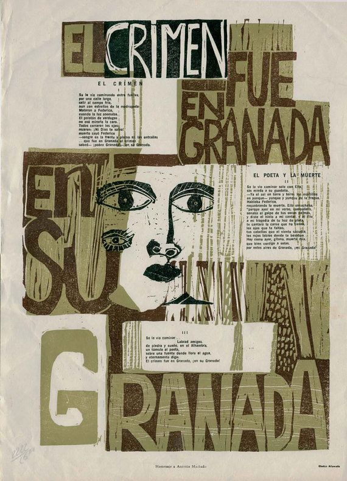

El duende, el destino trágico y las raíces |
Poemas de Federico García |

Lorca se apoya en la tradición popular española, especialmente en el octosílabo y en la forma del romance. Sus versos tienen musicalidad y cadencia cantada, con rima asonante en los pares y libertad en los impares. La métrica sencilla le permite desplegar imágenes intensas y simbólicas, pero siempre con un aire popular que acerca su poesía al canto oral.